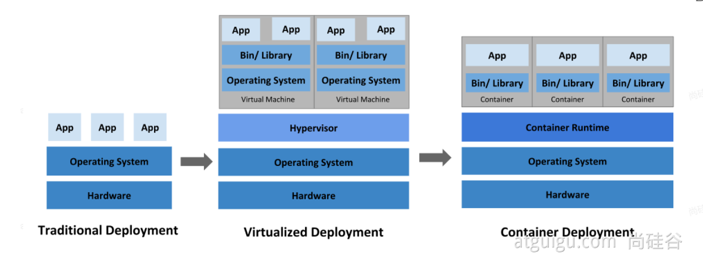
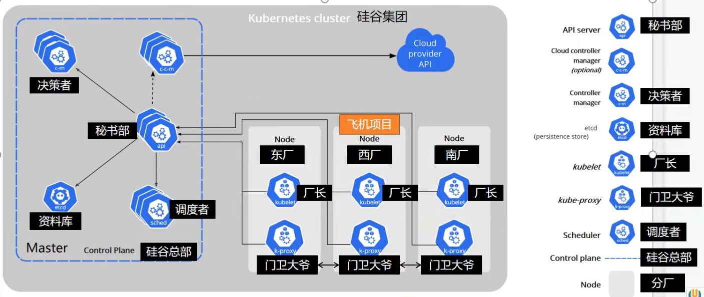
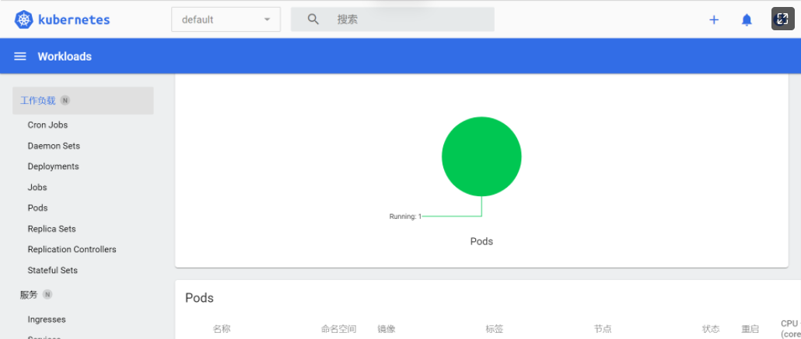

<!DOCTYPE html>


<html lang="zh-Hans">
  

    <head>
      <meta charset="utf-8" />
        
      <meta name="description" content="Technical output and problem solving record" />
      
      <meta
        name="viewport"
        content="width=device-width, initial-scale=1, maximum-scale=1"
      />
      <title>云原生02--Kubernetes入门 |  Tunan`s Blog</title>
  <meta name="generator" content="hexo-theme-ayer">
      
      <link rel="shortcut icon" href="/favicon.ico" />
       
<link rel="stylesheet" href="/dist/main.css">

      <link
        rel="stylesheet"
        href="https://cdn.jsdelivr.net/gh/Shen-Yu/cdn/css/remixicon.min.css"
      />
      
<link rel="stylesheet" href="/css/custom.css">
 
      <script src="https://cdn.jsdelivr.net/npm/pace-js@1.0.2/pace.min.js"></script>
       
 

      <link
        rel="stylesheet"
        href="https://cdn.jsdelivr.net/npm/@sweetalert2/theme-bulma@5.0.1/bulma.min.css"
      />
      <script src="https://cdn.jsdelivr.net/npm/sweetalert2@11.0.19/dist/sweetalert2.min.js"></script>

      <!-- mermaid -->
      
      <style>
        .swal2-styled.swal2-confirm {
          font-size: 1.6rem;
        }
      </style>
    </head>
  </html>
</html>


<body>
  <div id="app">
    
      
    <main class="content on">
      <section class="outer">
  <article
  id="post-02云原生-Kubernetes入门"
  class="article article-type-post"
  itemscope
  itemprop="blogPost"
  data-scroll-reveal
>
  <div class="article-inner">
    
    <header class="article-header">
       
<h1 class="article-title sea-center" style="border-left:0" itemprop="name">
  云原生02--Kubernetes入门
</h1>
 

      
    </header>
     
    <div class="article-meta">
      <a href="/2022/05/26/02%E4%BA%91%E5%8E%9F%E7%94%9F-Kubernetes%E5%85%A5%E9%97%A8/" class="article-date">
  <time datetime="2022-05-26T02:25:38.000Z" itemprop="datePublished">2022-05-26</time>
</a> 
  <div class="article-category">
    <a class="article-category-link" href="/categories/%E4%BA%91%E5%8E%9F%E7%94%9F/">云原生</a>
  </div>
  
<div class="word_count">
    <span class="post-time">
        <span class="post-meta-item-icon">
            <i class="ri-quill-pen-line"></i>
            <span class="post-meta-item-text"> Word count:</span>
            <span class="post-count">3k</span>
        </span>
    </span>

    <span class="post-time">
        &nbsp; | &nbsp;
        <span class="post-meta-item-icon">
            <i class="ri-book-open-line"></i>
            <span class="post-meta-item-text"> Reading time≈</span>
            <span class="post-count">12 min</span>
        </span>
    </span>
</div>
 
    </div>
      
    <div class="tocbot"></div>


  
    <div class="article-entry" itemprop="articleBody">
       
  <h1 id="基本概念"><a href="#基本概念" class="headerlink" title="基本概念"></a>基本概念</h1><p>1、k8s是什么</p>
<p>Kubernetes 为你提供了一个可弹性运行分布式系统的框架。 Kubernetes 会满足你的扩展要求、故障转移、部署模式等。 例如，Kubernetes 可以轻松管理系统的 Canary 部署。（金丝雀部署：先发布一个简化版本，当没有bug时再发布最终版本）<span id="more"></span></p>
<p></p>
<p>传统部署应用在一台服务器上时，应用之间互相没有隔离，当一个应用内存溢出或其他故障时，会导致其他应用的崩溃；进一步发展为在一个服务器上有多个操作系统，做到了内存隔离应用隔离，但代价太大，需要更大的存储空间；进入容器化时代之后，一个容器相当于一个小的虚拟系统，提供完整的应用功能，但所需存储空间比虚拟机小很多。</p>
<p>进入微服务时代之后，小服务上线很多，导致容器数量剧增，我们急需一个大规模<strong>容器编排系统</strong></p>
<p>kubernetes具有以下特性：</p>
<ul>
<li><strong>服务发现和负载均衡</strong><br>Kubernetes 可以使用 DNS 名称或自己的 IP 地址公开容器，如果进入容器的流量很大， Kubernetes 可以负载均衡并分配网络流量，从而使部署稳定。</li>
<li><strong>存储编排</strong><br>Kubernetes 允许你自动挂载你选择的存储系统，例如本地存储、公共云提供商等。</li>
<li><strong>自动部署和回滚</strong><br>你可以使用 Kubernetes 描述已部署容器的所需状态，它可以以受控的速率将实际状态 更改为期望状态。例如，你可以自动化 Kubernetes 来为你的部署创建新容器， 删除现有容器并将它们的所有资源用于新容器。</li>
<li><strong>自动完成装箱计算</strong><br>Kubernetes 允许你指定每个容器所需 CPU 和内存（RAM）。 当容器指定了资源请求时，Kubernetes 可以做出更好的决策来管理容器的资源。</li>
<li><strong>自我修复</strong><br>Kubernetes 重新启动失败的容器、替换容器、杀死不响应用户定义的 运行状况检查的容器，并且在准备好服务之前不将其通告给客户端。</li>
<li><strong>密钥与配置管理</strong><br>Kubernetes 允许你存储和管理敏感信息，例如密码、OAuth 令牌和 ssh 密钥。 你可以在不重建容器镜像的情况下部署和更新密钥和应用程序配置，也无需在堆栈配置中暴露密钥。</li>
</ul>
<h1 id="架构"><a href="#架构" class="headerlink" title="架构"></a>架构</h1><h2 id="工作方式"><a href="#工作方式" class="headerlink" title="工作方式"></a>工作方式</h2><p>Kubernetes <strong>Cluster</strong> <strong>=</strong> N <strong>Master</strong> Node <strong>+</strong> N <strong>Worker</strong> Node：N主节点+N工作节点； N&gt;=1</p>
<h2 id="组件架构"><a href="#组件架构" class="headerlink" title="组件架构"></a>组件架构</h2><p>这里借用雷丰阳老师的例子</p>
<p></p>
<h3 id="1、控制平面组件（Control-Plane-Components）"><a href="#1、控制平面组件（Control-Plane-Components）" class="headerlink" title="1、控制平面组件（Control Plane Components）"></a>1、控制平面组件（Control Plane Components）</h3><p>控制平面的组件对集群做出全局决策(比如调度)，以及检测和响应集群事件（例如，当不满足部署的 <code>replicas</code> 字段时，启动新的 <a target="_blank" rel="noopener" href="https://kubernetes.io/docs/concepts/workloads/pods/pod-overview/">pod</a>）。</p>
<p>控制平面组件可以在集群中的任何节点上运行。 然而，为了简单起见，设置脚本通常会在同一个计算机上启动所有控制平面组件， 并且不会在此计算机上运行用户容器。 请参阅<a target="_blank" rel="noopener" href="https://kubernetes.io/zh/docs/setup/production-environment/tools/kubeadm/high-availability/">使用 kubeadm 构建高可用性集群</a> 中关于多 VM 控制平面设置的示例。</p>
<h4 id="kube-apiserver"><a href="#kube-apiserver" class="headerlink" title="kube-apiserver"></a>kube-apiserver</h4><p>API 服务器是 Kubernetes <a target="_blank" rel="noopener" href="https://kubernetes.io/zh/docs/reference/glossary/?all=true#term-control-plane">控制面</a>的组件， 该组件公开了 Kubernetes API。 API 服务器是 Kubernetes 控制面的前端。</p>
<p>Kubernetes API 服务器的主要实现是 <a target="_blank" rel="noopener" href="https://kubernetes.io/zh/docs/reference/command-line-tools-reference/kube-apiserver/">kube-apiserver</a>。 kube-apiserver 设计上考虑了水平伸缩，也就是说，它可通过部署多个实例进行伸缩。 你可以运行 kube-apiserver 的多个实例，并在这些实例之间平衡流量。</p>
<h4 id="etcd"><a href="#etcd" class="headerlink" title="etcd"></a>etcd</h4><p>etcd 是兼具一致性和高可用性的键值数据库，可以作为保存 Kubernetes 所有集群数据的后台数据库。</p>
<p>您的 Kubernetes 集群的 etcd 数据库通常需要有个备份计划。</p>
<p>要了解 etcd 更深层次的信息，请参考 <a target="_blank" rel="noopener" href="https://etcd.io/docs/">etcd 文档</a>。</p>
<h4 id="kube-scheduler"><a href="#kube-scheduler" class="headerlink" title="kube-scheduler"></a>kube-scheduler</h4><p>控制平面组件，负责监视新创建的、未指定运行<a target="_blank" rel="noopener" href="https://kubernetes.io/zh/docs/concepts/architecture/nodes/">节点（node）</a>的 <a target="_blank" rel="noopener" href="https://kubernetes.io/docs/concepts/workloads/pods/pod-overview/">Pods</a>，选择节点让 Pod 在上面运行。</p>
<p>调度决策考虑的因素包括单个 Pod 和 Pod 集合的资源需求、硬件/软件/策略约束、亲和性和反亲和性规范、数据位置、工作负载间的干扰和最后时限。</p>
<h4 id="kube-controller-manager"><a href="#kube-controller-manager" class="headerlink" title="kube-controller-manager"></a>kube-controller-manager</h4><p>在主节点上运行 <a target="_blank" rel="noopener" href="https://kubernetes.io/zh/docs/concepts/architecture/controller/">控制器</a> 的组件。</p>
<p>从逻辑上讲，每个<a target="_blank" rel="noopener" href="https://kubernetes.io/zh/docs/concepts/architecture/controller/">控制器</a>都是一个单独的进程， 但是为了降低复杂性，它们都被编译到同一个可执行文件，并在一个进程中运行。</p>
<p>这些控制器包括:</p>
<ul>
<li>节点控制器（Node Controller）: 负责在节点出现故障时进行通知和响应</li>
<li>任务控制器（Job controller）: 监测代表一次性任务的 Job 对象，然后创建 Pods 来运行这些任务直至完成</li>
<li>端点控制器（Endpoints Controller）: 填充端点(Endpoints)对象(即加入 Service 与 Pod)</li>
<li>服务帐户和令牌控制器（Service Account &amp; Token Controllers）: 为新的命名空间创建默认帐户和 API 访问令牌</li>
</ul>
<h4 id="cloud-controller-manager"><a href="#cloud-controller-manager" class="headerlink" title="cloud-controller-manager"></a>cloud-controller-manager</h4><p>云控制器管理器是指嵌入特定云的控制逻辑的 <a target="_blank" rel="noopener" href="https://kubernetes.io/zh/docs/reference/glossary/?all=true#term-control-plane">控制平面</a>组件。 云控制器管理器允许您链接集群到云提供商的应用编程接口中， 并把和该云平台交互的组件与只和您的集群交互的组件分离开。</p>
<p><code>cloud-controller-manager</code> 仅运行特定于云平台的控制回路。 如果你在自己的环境中运行 Kubernetes，或者在本地计算机中运行学习环境， 所部署的环境中不需要云控制器管理器。</p>
<p>与 <code>kube-controller-manager</code> 类似，<code>cloud-controller-manager</code> 将若干逻辑上独立的 控制回路组合到同一个可执行文件中，供你以同一进程的方式运行。 你可以对其执行水平扩容（运行不止一个副本）以提升性能或者增强容错能力。</p>
<p>下面的控制器都包含对云平台驱动的依赖：</p>
<ul>
<li>节点控制器（Node Controller）: 用于在节点终止响应后检查云提供商以确定节点是否已被删除</li>
<li>路由控制器（Route Controller）: 用于在底层云基础架构中设置路由</li>
<li>服务控制器（Service Controller）: 用于创建、更新和删除云提供商负载均衡器</li>
</ul>
<h3 id="2、Node-组件"><a href="#2、Node-组件" class="headerlink" title="2、Node 组件"></a>2、Node 组件</h3><p>节点组件在每个节点上运行，维护运行的 Pod 并提供 Kubernetes 运行环境。</p>
<h4 id="kubelet"><a href="#kubelet" class="headerlink" title="kubelet"></a>kubelet</h4><p>一个在集群中每个<a target="_blank" rel="noopener" href="https://kubernetes.io/zh/docs/concepts/architecture/nodes/">节点（node）</a>上运行的代理。 它保证<a target="_blank" rel="noopener" href="https://kubernetes.io/zh/docs/concepts/overview/what-is-kubernetes/#why-containers">容器（containers）</a>都 运行在 <a target="_blank" rel="noopener" href="https://kubernetes.io/docs/concepts/workloads/pods/pod-overview/">Pod</a> 中。</p>
<p>kubelet 接收一组通过各类机制提供给它的 PodSpecs，确保这些 PodSpecs 中描述的容器处于运行状态且健康。 kubelet 不会管理不是由 Kubernetes 创建的容器。</p>
<h4 id="kube-proxy"><a href="#kube-proxy" class="headerlink" title="kube-proxy"></a>kube-proxy</h4><p><a target="_blank" rel="noopener" href="https://kubernetes.io/zh/docs/reference/command-line-tools-reference/kube-proxy/">kube-proxy</a> 是集群中每个节点上运行的网络代理， 实现 Kubernetes <a target="_blank" rel="noopener" href="https://kubernetes.io/zh/docs/concepts/services-networking/service/">服务（Service）</a> 概念的一部分。</p>
<p>kube-proxy 维护节点上的网络规则。这些网络规则允许从集群内部或外部的网络会话与 Pod 进行网络通信。</p>
<p>如果操作系统提供了数据包过滤层并可用的话，kube-proxy 会通过它来实现网络规则。否则， kube-proxy 仅转发流量本身。</p>
<h1 id="Kubeadm创建集群"><a href="#Kubeadm创建集群" class="headerlink" title="Kubeadm创建集群"></a>Kubeadm创建集群</h1><p>首先申请三个服务器，创建一个k8s集群，安装好docker</p>
<h2 id="1、安装kubeadm"><a href="#1、安装kubeadm" class="headerlink" title="1、安装kubeadm"></a>1、安装kubeadm</h2><ul>
<li><p>一台兼容的 Linux 主机。Kubernetes 项目为基于 Debian 和 Red Hat 的 Linux 发行版以及一些不提供包管理器的发行版提供通用的指令</p>
</li>
<li><p>每台机器 2 GB 或更多的 RAM （如果少于这个数字将会影响你应用的运行内存)</p>
</li>
<li><p>2 CPU 核或更多</p>
</li>
<li><p>集群中的所有机器的网络彼此均能相互连接(公网和内网都可以)</p>
</li>
<li><ul>
<li><strong>设置防火墙放行规则</strong></li>
</ul>
</li>
<li><p>节点之中不可以有重复的主机名、MAC 地址或 product_uuid。</p>
</li>
<li><ul>
<li><strong>设置不同hostname</strong></li>
</ul>
</li>
<li><p>开启机器上的某些端口。</p>
</li>
<li><ul>
<li><strong>内网互信</strong></li>
</ul>
</li>
<li><p>禁用交换分区。为了保证 kubelet 正常工作，你 <strong>必须</strong> 禁用交换分区。</p>
</li>
<li><ul>
<li><strong>永久关闭</strong></li>
</ul>
</li>
</ul>
<h3 id="基础环境"><a href="#基础环境" class="headerlink" title="基础环境"></a>基础环境</h3><pre><code class="bash">#各个机器设置自己的域名
hostnamectl set-hostname xxxx


# 将 SELinux 设置为 permissive 模式（相当于将其禁用）
sudo setenforce 0
sudo sed -i &#39;s/^SELINUX=enforcing$/SELINUX=permissive/&#39; /etc/selinux/config

#关闭swap
swapoff -a  
sed -ri &#39;s/.*swap.*/#&amp;/&#39; /etc/fstab

#允许 iptables 检查桥接流量
cat &lt;&lt;EOF | sudo tee /etc/modules-load.d/k8s.conf
br_netfilter
EOF

cat &lt;&lt;EOF | sudo tee /etc/sysctl.d/k8s.conf
net.bridge.bridge-nf-call-ip6tables = 1
net.bridge.bridge-nf-call-iptables = 1
EOF
sudo sysctl --system
</code></pre>
<h3 id="安装kubelet、kubeadm、kubectl"><a href="#安装kubelet、kubeadm、kubectl" class="headerlink" title="安装kubelet、kubeadm、kubectl"></a>安装kubelet、kubeadm、kubectl</h3><pre><code class="bash">cat &lt;&lt;EOF | sudo tee /etc/yum.repos.d/kubernetes.repo
[kubernetes]
name=Kubernetes
baseurl=http://mirrors.aliyun.com/kubernetes/yum/repos/kubernetes-el7-x86_64
enabled=1
gpgcheck=0
repo_gpgcheck=0
gpgkey=http://mirrors.aliyun.com/kubernetes/yum/doc/yum-key.gpg
   http://mirrors.aliyun.com/kubernetes/yum/doc/rpm-package-key.gpg
exclude=kubelet kubeadm kubectl
EOF


sudo yum install -y kubelet-1.20.9 kubeadm-1.20.9 kubectl-1.20.9 --disableexcludes=kubernetes

sudo systemctl enable --now kubelet
</code></pre>
<p>kubelet 现在每隔几秒就会重启，因为它陷入了一个等待 kubeadm 指令的死循环</p>
<h2 id="2、使用kubeadm引导集群"><a href="#2、使用kubeadm引导集群" class="headerlink" title="2、使用kubeadm引导集群"></a>2、使用kubeadm引导集群</h2><h3 id="下载各个机器需要的镜像"><a href="#下载各个机器需要的镜像" class="headerlink" title="下载各个机器需要的镜像"></a>下载各个机器需要的镜像</h3><pre><code class="bash">sudo tee ./images.sh &lt;&lt;-&#39;EOF&#39;
#!/bin/bash
images=(
kube-apiserver:v1.20.9
kube-proxy:v1.20.9
kube-controller-manager:v1.20.9
kube-scheduler:v1.20.9
coredns:1.7.0
etcd:3.4.13-0
pause:3.2
)
for imageName in $&#123;images[@]&#125; ; do
docker pull registry.cn-hangzhou.aliyuncs.com/lfy_k8s_images/$imageName
done
EOF
   
chmod +x ./images.sh &amp;&amp; ./images.sh
</code></pre>
<h3 id="初始化主节点"><a href="#初始化主节点" class="headerlink" title="初始化主节点"></a>初始化主节点</h3><pre><code class="bash">#所有机器添加master域名映射，以下需要修改为自己的
echo &quot;172.31.0.4  cluster-endpoint&quot; &gt;&gt; /etc/hosts


#主节点初始化
kubeadm init \
--apiserver-advertise-address=172.31.0.4 \
--control-plane-endpoint=cluster-endpoint \
--image-repository registry.cn-hangzhou.aliyuncs.com/lfy_k8s_images \
--kubernetes-version v1.20.9 \
--service-cidr=10.96.0.0/16 \
--pod-network-cidr=192.168.0.0/16

#所有网络范围不重叠
</code></pre>
<p>成功显示，表示k8s安装成功</p>
<pre><code class="bash">Your Kubernetes control-plane has initialized successfully!

To start using your cluster, you need to run the following as a regular user:

  mkdir -p $HOME/.kube
  sudo cp -i /etc/kubernetes/admin.conf $HOME/.kube/config
  sudo chown $(id -u):$(id -g) $HOME/.kube/config

Alternatively, if you are the root user, you can run:

  export KUBECONFIG=/etc/kubernetes/admin.conf

You should now deploy a pod network to the cluster.
Run &quot;kubectl apply -f [podnetwork].yaml&quot; with one of the options listed at:
  https://kubernetes.io/docs/concepts/cluster-administration/addons/

You can now join any number of control-plane nodes by copying certificate authorities
and service account keys on each node and then running the following as root:

  kubeadm join cluster-endpoint:6443 --token hums8f.vyx71prsg74ofce7 \
    --discovery-token-ca-cert-hash sha256:a394d059dd51d68bb007a532a037d0a477131480ae95f75840c461e85e2c6ae3 \
    --control-plane 

Then you can join any number of worker nodes by running the following on each as root:

kubeadm join cluster-endpoint:6443 --token hums8f.vyx71prsg74ofce7 \
    --discovery-token-ca-cert-hash sha256:a394d059dd51d68bb007a532a037d0a477131480ae95f75840c461e85e2c6ae3
</code></pre>
<pre><code class="bash">#查看集群所有节点
kubectl get nodes

#根据配置文件，给集群创建资源
kubectl apply -f xxxx.yaml

#查看集群部署了哪些应用？
docker ps   ===   kubectl get pods -A
# 运行中的应用在docker里面叫容器，在k8s里面叫Pod
kubectl get pods -A
</code></pre>
<h3 id="安装网络组件"><a href="#安装网络组件" class="headerlink" title="安装网络组件"></a>安装网络组件</h3><pre><code class="bash">curl https://docs.projectcalico.org/manifests/calico.yaml -O

kubectl apply -f calico.yaml
</code></pre>
<h3 id="加入node节点"><a href="#加入node节点" class="headerlink" title="加入node节点"></a>加入node节点</h3><pre><code class="bash">kubeadm join cluster-endpoint:6443 --token x5g4uy.wpjjdbgra92s25pp \
    --discovery-token-ca-cert-hash sha256:6255797916eaee52bf9dda9429db616fcd828436708345a308f4b917d3457a22
</code></pre>
<h3 id="验证集群"><a href="#验证集群" class="headerlink" title="验证集群"></a>验证集群</h3><pre><code class="bash">kubectl get nodes
</code></pre>
<h3 id="部署dashboard"><a href="#部署dashboard" class="headerlink" title="部署dashboard"></a>部署dashboard</h3><p>kubernetes官方提供的可视化界面</p>
<p><a target="_blank" rel="noopener" href="https://github.com/kubernetes/dashboard">https://github.com/kubernetes/dashboard</a></p>
<p>1、部署</p>
<pre><code class="bash">kubectl apply -f https://raw.githubusercontent.com/kubernetes/dashboard/v2.3.1/aio/deploy/recommended.yaml
</code></pre>
<p>2、设置访问端口</p>
<pre><code class="bash">kubectl edit svc kubernetes-dashboard -n kubernetes-dashboard
</code></pre>
<p>type: ClusterIP 改为 type: NodePort</p>
<pre><code class="bash">kubectl get svc -A |grep kubernetes-dashboard
## 找到端口，在安全组放行
</code></pre>
<p>访问： https://集群任意IP:端口      <a target="_blank" rel="noopener" href="https://139.198.165.238:32759/">https://139.198.165.238:32759</a></p>
<p>3、创建访问账号</p>
<pre><code class="yaml">#创建访问账号，准备一个yaml文件； vi dash.yaml
apiVersion: v1
kind: ServiceAccount
metadata:
  name: admin-user
  namespace: kubernetes-dashboard
---
apiVersion: rbac.authorization.k8s.io/v1
kind: ClusterRoleBinding
metadata:
  name: admin-user
roleRef:
  apiGroup: rbac.authorization.k8s.io
  kind: ClusterRole
  name: cluster-admin
subjects:
- kind: ServiceAccount
  name: admin-user
  namespace: kubernetes-dashboard
</code></pre>
<pre><code class="bash">kubectl apply -f dash.yaml
</code></pre>
<p>4、令牌访问</p>
<pre><code class="bash">#获取访问令牌
kubectl -n kubernetes-dashboard get secret $(kubectl -n kubernetes-dashboard get sa/admin-user -o jsonpath=&quot;&#123;.secrets[0].name&#125;&quot;) -o go-template=&quot;&#123;&#123;.data.token | base64decode&#125;&#125;&quot;
</code></pre>
<p>5、界面</p>
<p></p>
 
      <!-- reward -->
      
    </div>
    

    <!-- copyright -->
    
    <div class="declare">
      <ul class="post-copyright">
        <li>
          <i class="ri-copyright-line"></i>
          <strong>Copyright： </strong>
          
          Copyright is owned by the author. For commercial reprints, please contact the author for authorization. For non-commercial reprints, please indicate the source.
          
        </li>
      </ul>
    </div>
    
    <footer class="article-footer">
       
<div class="share-btn">
      <span class="share-sns share-outer">
        <i class="ri-share-forward-line"></i>
        分享
      </span>
      <div class="share-wrap">
        <i class="arrow"></i>
        <div class="share-icons">
          
          <a class="weibo share-sns" href="javascript:;" data-type="weibo">
            <i class="ri-weibo-fill"></i>
          </a>
          <a class="weixin share-sns wxFab" href="javascript:;" data-type="weixin">
            <i class="ri-wechat-fill"></i>
          </a>
          <a class="qq share-sns" href="javascript:;" data-type="qq">
            <i class="ri-qq-fill"></i>
          </a>
          <a class="douban share-sns" href="javascript:;" data-type="douban">
            <i class="ri-douban-line"></i>
          </a>
          <!-- <a class="qzone share-sns" href="javascript:;" data-type="qzone">
            <i class="icon icon-qzone"></i>
          </a> -->
          
          <a class="facebook share-sns" href="javascript:;" data-type="facebook">
            <i class="ri-facebook-circle-fill"></i>
          </a>
          <a class="twitter share-sns" href="javascript:;" data-type="twitter">
            <i class="ri-twitter-fill"></i>
          </a>
          <a class="google share-sns" href="javascript:;" data-type="google">
            <i class="ri-google-fill"></i>
          </a>
        </div>
      </div>
</div>

<div class="wx-share-modal">
    <a class="modal-close" href="javascript:;"><i class="ri-close-circle-line"></i></a>
    <p>扫一扫，分享到微信</p>
    <div class="wx-qrcode">
      
    </div>
</div>

<div id="share-mask"></div>  
  <ul class="article-tag-list" itemprop="keywords"><li class="article-tag-list-item"><a class="article-tag-list-link" href="/tags/k8s/" rel="tag">k8s</a></li></ul>

    </footer>
  </div>

   
  <nav class="article-nav">
    
      <a href="/2022/05/29/03%E4%BA%91%E5%8E%9F%E7%94%9F-Kubernetes%E6%A0%B8%E5%BF%83%E5%AE%9E%E6%88%98/" class="article-nav-link">
        <strong class="article-nav-caption">上一篇</strong>
        <div class="article-nav-title">
          
            云原生03--Kubernetes核心实战
          
        </div>
      </a>
    
    
      <a href="/2022/05/24/01%E4%BA%91%E5%8E%9F%E7%94%9F-Docker%E5%AE%B9%E5%99%A8/" class="article-nav-link">
        <strong class="article-nav-caption">下一篇</strong>
        <div class="article-nav-title">云原生01--Docker容器</div>
      </a>
    
  </nav>

   
<!-- valine评论 -->
<div id="vcomments-box">
  <div id="vcomments"></div>
</div>
<script src="//cdn1.lncld.net/static/js/3.0.4/av-min.js"></script>
<script src="https://cdn.jsdelivr.net/npm/valine@1.4.14/dist/Valine.min.js"></script>
<script>
  new Valine({
    el: "#vcomments",
    app_id: "",
    app_key: "",
    path: window.location.pathname,
    avatar: "monsterid",
    placeholder: "给我的文章加点评论吧~",
    recordIP: true,
  });
  const infoEle = document.querySelector("#vcomments .info");
  if (infoEle && infoEle.childNodes && infoEle.childNodes.length > 0) {
    infoEle.childNodes.forEach(function (item) {
      item.parentNode.removeChild(item);
    });
  }
</script>
<style>
  #vcomments-box {
    padding: 5px 30px;
  }

  @media screen and (max-width: 800px) {
    #vcomments-box {
      padding: 5px 0px;
    }
  }

  #vcomments-box #vcomments {
    background-color: #fff;
  }

  .v .vlist .vcard .vh {
    padding-right: 20px;
  }

  .v .vlist .vcard {
    padding-left: 10px;
  }
</style>

 
   
     
</article>

</section>
      <footer class="footer">
  <div class="outer">
    <ul>
      <li>
        Copyrights &copy;
        2018-2022
        <i class="ri-heart-fill heart_icon"></i> Tunan
      </li>
    </ul>
    <ul>
      <li>
        
      </li>
    </ul>
    <ul>
      <li>
        
        
        <span>
  <span><i class="ri-user-3-fill"></i>Visitors:<span id="busuanzi_value_site_uv"></span></span>
  <span class="division">|</span>
  <span><i class="ri-eye-fill"></i>Views:<span id="busuanzi_value_page_pv"></span></span>
</span>
        
      </li>
    </ul>
    <ul>
      
    </ul>
    <ul>
      
    </ul>
    <ul>
      <li>
        <!-- cnzz统计 -->
        
        <script type="text/javascript" src='https://s9.cnzz.com/z_stat.php?id=1278069914&amp;web_id=1278069914'></script>
        
      </li>
    </ul>
  </div>
</footer>    
    </main>
    <div class="float_btns">
      <div class="totop" id="totop">
  <i class="ri-arrow-up-line"></i>
</div>

<div class="todark" id="todark">
  <i class="ri-moon-line"></i>
</div>

    </div>
    <aside class="sidebar on">
      <button class="navbar-toggle"></button>
<nav class="navbar">
  
  <div class="logo">
    <a href="/"></a>
  </div>
  
  <ul class="nav nav-main">
    
    <li class="nav-item">
      <a class="nav-item-link" href="/">主页</a>
    </li>
    
    <li class="nav-item">
      <a class="nav-item-link" href="/archives">归档</a>
    </li>
    
    <li class="nav-item">
      <a class="nav-item-link" href="/categories">分类</a>
    </li>
    
    <li class="nav-item">
      <a class="nav-item-link" href="/tags">标签</a>
    </li>
    
    <li class="nav-item">
      <a class="nav-item-link" href="/tags/share">分享</a>
    </li>
    
    <li class="nav-item">
      <a class="nav-item-link" target="_blank" rel="noopener" href="https://blog.csdn.net/North_City_">CSDN</a>
    </li>
    
  </ul>
</nav>
<nav class="navbar navbar-bottom">
  <ul class="nav">
    <li class="nav-item">
      
      <a class="nav-item-link nav-item-search"  title="Search">
        <i class="ri-search-line"></i>
      </a>
      
      
      <a class="nav-item-link" target="_blank" href="/atom.xml" title="RSS Feed">
        <i class="ri-rss-line"></i>
      </a>
      
    </li>
  </ul>
</nav>
<div class="search-form-wrap">
  <div class="local-search local-search-plugin">
  <input type="search" id="local-search-input" class="local-search-input" placeholder="Search...">
  <div id="local-search-result" class="local-search-result"></div>
</div>
</div>
    </aside>
    <div id="mask"></div>

<!-- #reward -->
<div id="reward">
  <span class="close"><i class="ri-close-line"></i></span>
  <p class="reward-p"><i class="ri-cup-line"></i>请我喝杯咖啡吧~</p>
  <div class="reward-box">
    
    <div class="reward-item">
      
      <span class="reward-type">支付宝</span>
    </div>
    
    
    <div class="reward-item">
      
      <span class="reward-type">微信</span>
    </div>
    
  </div>
</div>
    
<script src="/js/jquery-3.6.0.min.js"></script>
 
<script src="/js/lazyload.min.js"></script>

<!-- Tocbot -->
 
<script src="/js/tocbot.min.js"></script>

<script>
  tocbot.init({
    tocSelector: ".tocbot",
    contentSelector: ".article-entry",
    headingSelector: "h1, h2, h3, h4, h5, h6",
    hasInnerContainers: true,
    scrollSmooth: true,
    scrollContainer: "main",
    positionFixedSelector: ".tocbot",
    positionFixedClass: "is-position-fixed",
    fixedSidebarOffset: "auto",
  });
</script>

<script src="https://cdn.jsdelivr.net/npm/jquery-modal@0.9.2/jquery.modal.min.js"></script>
<link
  rel="stylesheet"
  href="https://cdn.jsdelivr.net/npm/jquery-modal@0.9.2/jquery.modal.min.css"
/>
<script src="https://cdn.jsdelivr.net/npm/justifiedGallery@3.7.0/dist/js/jquery.justifiedGallery.min.js"></script>

<script src="/dist/main.js"></script>

<!-- ImageViewer -->
 <!-- Root element of PhotoSwipe. Must have class pswp. -->
<div class="pswp" tabindex="-1" role="dialog" aria-hidden="true">

    <!-- Background of PhotoSwipe. 
         It's a separate element as animating opacity is faster than rgba(). -->
    <div class="pswp__bg"></div>

    <!-- Slides wrapper with overflow:hidden. -->
    <div class="pswp__scroll-wrap">

        <!-- Container that holds slides. 
            PhotoSwipe keeps only 3 of them in the DOM to save memory.
            Don't modify these 3 pswp__item elements, data is added later on. -->
        <div class="pswp__container">
            <div class="pswp__item"></div>
            <div class="pswp__item"></div>
            <div class="pswp__item"></div>
        </div>

        <!-- Default (PhotoSwipeUI_Default) interface on top of sliding area. Can be changed. -->
        <div class="pswp__ui pswp__ui--hidden">

            <div class="pswp__top-bar">

                <!--  Controls are self-explanatory. Order can be changed. -->

                <div class="pswp__counter"></div>

                <button class="pswp__button pswp__button--close" title="Close (Esc)"></button>

                <button class="pswp__button pswp__button--share" style="display:none" title="Share"></button>

                <button class="pswp__button pswp__button--fs" title="Toggle fullscreen"></button>

                <button class="pswp__button pswp__button--zoom" title="Zoom in/out"></button>

                <!-- Preloader demo http://codepen.io/dimsemenov/pen/yyBWoR -->
                <!-- element will get class pswp__preloader--active when preloader is running -->
                <div class="pswp__preloader">
                    <div class="pswp__preloader__icn">
                        <div class="pswp__preloader__cut">
                            <div class="pswp__preloader__donut"></div>
                        </div>
                    </div>
                </div>
            </div>

            <div class="pswp__share-modal pswp__share-modal--hidden pswp__single-tap">
                <div class="pswp__share-tooltip"></div>
            </div>

            <button class="pswp__button pswp__button--arrow--left" title="Previous (arrow left)">
            </button>

            <button class="pswp__button pswp__button--arrow--right" title="Next (arrow right)">
            </button>

            <div class="pswp__caption">
                <div class="pswp__caption__center"></div>
            </div>

        </div>

    </div>

</div>

<link rel="stylesheet" href="https://cdn.jsdelivr.net/npm/photoswipe@4.1.3/dist/photoswipe.min.css">
<link rel="stylesheet" href="https://cdn.jsdelivr.net/npm/photoswipe@4.1.3/dist/default-skin/default-skin.min.css">
<script src="https://cdn.jsdelivr.net/npm/photoswipe@4.1.3/dist/photoswipe.min.js"></script>
<script src="https://cdn.jsdelivr.net/npm/photoswipe@4.1.3/dist/photoswipe-ui-default.min.js"></script>

<script>
    function viewer_init() {
        let pswpElement = document.querySelectorAll('.pswp')[0];
        let $imgArr = document.querySelectorAll(('.article-entry img:not(.reward-img)'))

        $imgArr.forEach(($em, i) => {
            $em.onclick = () => {
                // slider展开状态
                // todo: 这样不好，后面改成状态
                if (document.querySelector('.left-col.show')) return
                let items = []
                $imgArr.forEach(($em2, i2) => {
                    let img = $em2.getAttribute('data-idx', i2)
                    let src = $em2.getAttribute('data-target') || $em2.getAttribute('src')
                    let title = $em2.getAttribute('alt')
                    // 获得原图尺寸
                    const image = new Image()
                    image.src = src
                    items.push({
                        src: src,
                        w: image.width || $em2.width,
                        h: image.height || $em2.height,
                        title: title
                    })
                })
                var gallery = new PhotoSwipe(pswpElement, PhotoSwipeUI_Default, items, {
                    index: parseInt(i)
                });
                gallery.init()
            }
        })
    }
    viewer_init()
</script> 
<!-- MathJax -->

<!-- Katex -->

<!-- busuanzi  -->
 
<script src="/js/busuanzi-2.3.pure.min.js"></script>
 
<!-- ClickLove -->

<!-- ClickBoom1 -->

<!-- ClickBoom2 -->

<!-- CodeCopy -->
 
<link rel="stylesheet" href="/css/clipboard.css">
 <script src="https://cdn.jsdelivr.net/npm/clipboard@2/dist/clipboard.min.js"></script>
<script>
  function wait(callback, seconds) {
    var timelag = null;
    timelag = window.setTimeout(callback, seconds);
  }
  !function (e, t, a) {
    var initCopyCode = function(){
      var copyHtml = '';
      copyHtml += '<button class="btn-copy" data-clipboard-snippet="">';
      copyHtml += '<i class="ri-file-copy-2-line"></i><span>COPY</span>';
      copyHtml += '</button>';
      $(".highlight .code pre").before(copyHtml);
      $(".article pre code").before(copyHtml);
      var clipboard = new ClipboardJS('.btn-copy', {
        target: function(trigger) {
          return trigger.nextElementSibling;
        }
      });
      clipboard.on('success', function(e) {
        let $btn = $(e.trigger);
        $btn.addClass('copied');
        let $icon = $($btn.find('i'));
        $icon.removeClass('ri-file-copy-2-line');
        $icon.addClass('ri-checkbox-circle-line');
        let $span = $($btn.find('span'));
        $span[0].innerText = 'COPIED';
        
        wait(function () { // 等待两秒钟后恢复
          $icon.removeClass('ri-checkbox-circle-line');
          $icon.addClass('ri-file-copy-2-line');
          $span[0].innerText = 'COPY';
        }, 2000);
      });
      clipboard.on('error', function(e) {
        e.clearSelection();
        let $btn = $(e.trigger);
        $btn.addClass('copy-failed');
        let $icon = $($btn.find('i'));
        $icon.removeClass('ri-file-copy-2-line');
        $icon.addClass('ri-time-line');
        let $span = $($btn.find('span'));
        $span[0].innerText = 'COPY FAILED';
        
        wait(function () { // 等待两秒钟后恢复
          $icon.removeClass('ri-time-line');
          $icon.addClass('ri-file-copy-2-line');
          $span[0].innerText = 'COPY';
        }, 2000);
      });
    }
    initCopyCode();
  }(window, document);
</script>
 
<!-- CanvasBackground -->

<script>
  if (window.mermaid) {
    mermaid.initialize({ theme: "forest" });
  }
</script>


    
    

  </div>
</body>

</html>